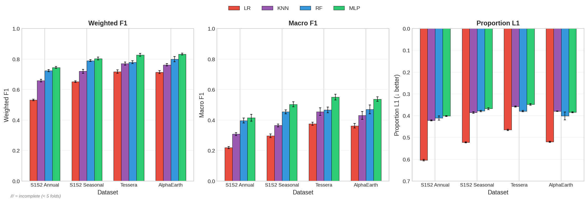
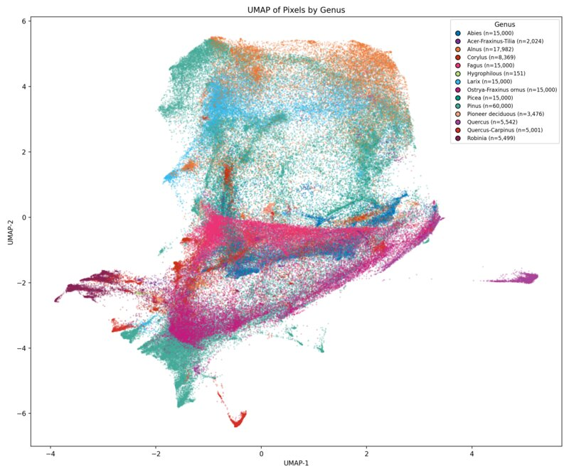
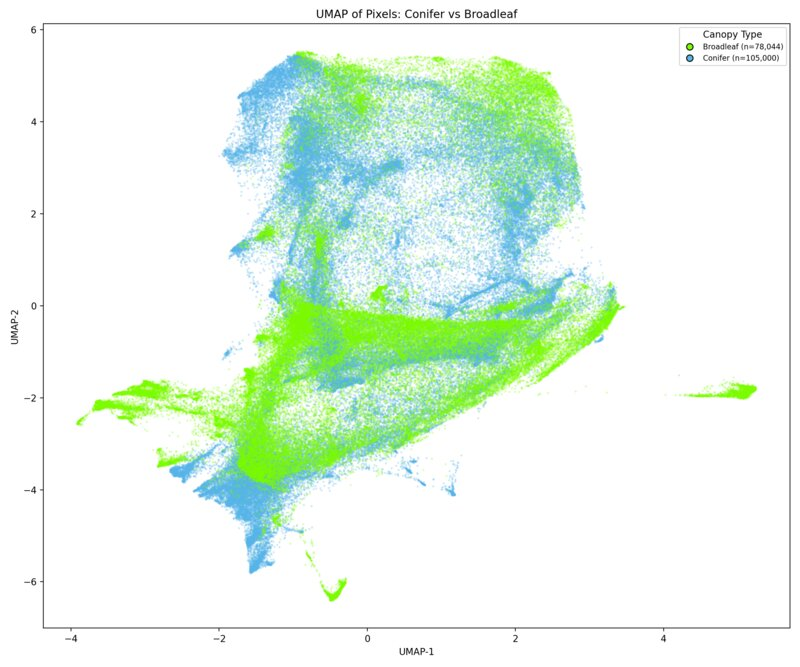
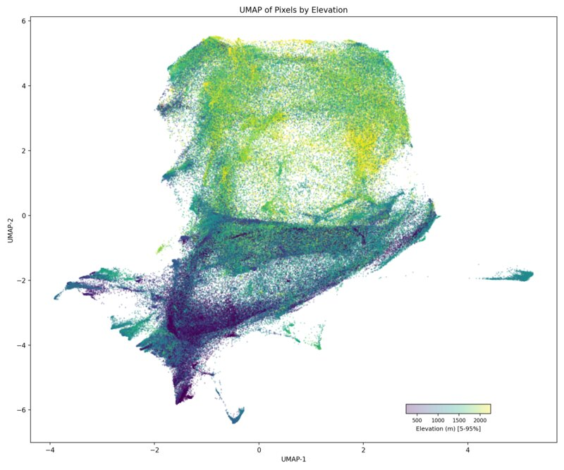
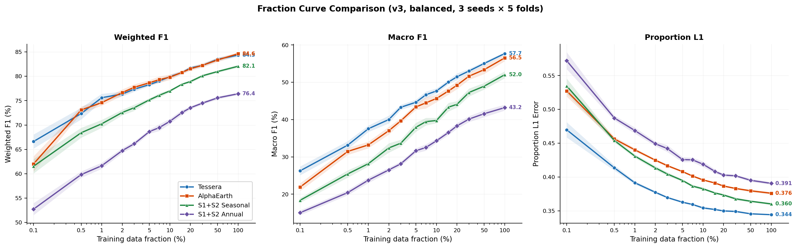
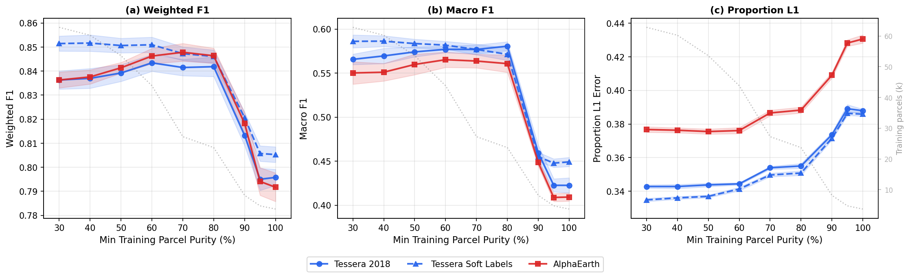
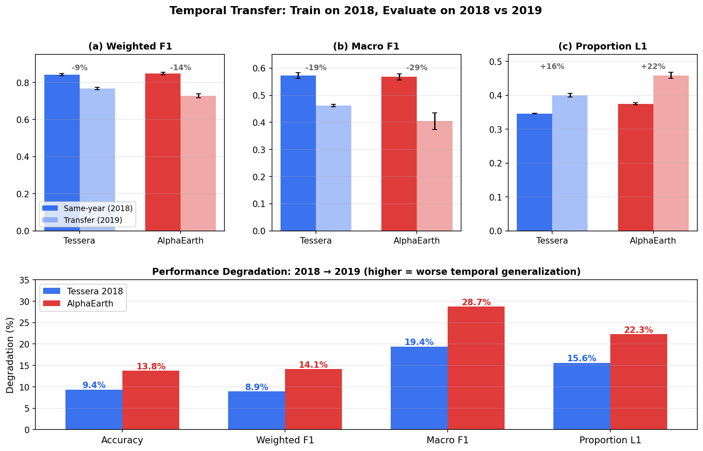
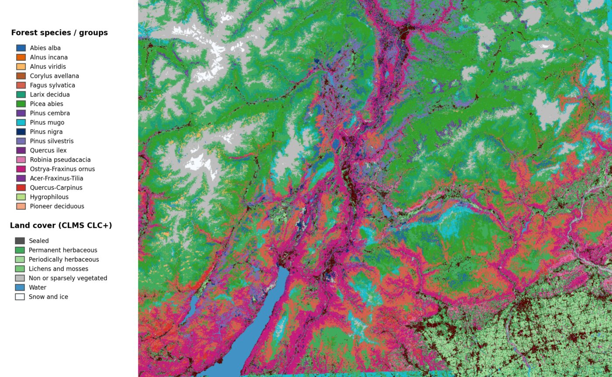

Key Results
Foundation Models Substantially Outperform Satellite Composites
Both Tessera and AlphaEarth embeddings achieve significantly higher classification accuracy than conventional Sentinel-1/2 composites across all metrics. Performance gains are largely driven by embedding quality rather than downstream model capacity.
A compact neural network (MLP) provides the best results, outperforming Random Forest while matching deeper architectures — suggesting the embeddings already encode rich, species-discriminative structure.

Classification performance across representations and classifier types. Foundation model embeddings (Tessera, AlphaEarth) vs conventional Sentinel composites.
Embedding Structure Reflects Ecological Organisation
UMAP projections of Tessera embeddings reveal that the latent space naturally separates species along ecologically meaningful axes. Conifers and broadleaves form distinct macro-clusters, while individual species and genera occupy well-defined regions — all without any ecological supervision during pre-training. Point ordering by the 3rd UMAP dimension demonstrates separation in depth. Point ordering by the 3rd UMAP dimension demonstrates separation in depth.

Species — Tessera 2018

Genus — Tessera 2018

Conifer vs Broadleaf — Tessera 2018

Elevation gradient — Tessera 2018

Classification performance as training data is progressively reduced.
Foundation Models Are Radically More Label-Efficient
When training data is progressively reduced, foundation model embeddings degrade far more gracefully than conventional composites. Tessera and AlphaEarth maintain strong performance with a fraction of the labels that baselines require.
This is critical for practical applications where labelled ecological data is expensive, sparse, and regionally uneven — opening the door to species mapping in data-poor regions.
Robust to Label Impurity
Classification accuracy remains stable even when moderately impure (mixed-species) parcels are included in the training data. This allows the full forest inventory to be utilised without aggressive filtering, maximising data volume.
Furthermore, incorporating parcel-level species fractions as soft labels during training helps the model extract information from mixed stands, improving performance for rarer species that typically occur in mixed parcels.

Performance across label purity thresholds for different representations.

Classification performance when models trained in one year are applied to subsequent years.
Temporal Transfer: The Key Challenge
Cross-year transfer reveals notable performance degradation, particularly for rare species. Interannual variability in phenology and satellite acquisition conditions affects model transferability across years.
This highlights the importance of multi-year training strategies and temporal alignment in operational forest monitoring — a key direction for future work.
Wall-to-Wall Species Map
The final species-prediction map across the entire Trentino landscape at 10 m resolution, produced using Tessera embeddings and an MLP classifier trained with soft labels.
